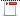

Security
Security governs the access and permissions that a user has within the software. Every user must have a user account and can be assigned specific security profile(s) within that account. Each security profile is assigned permissions that determine the access that the user has to various components in the business area.
Depending on the user's security profile (admin or non-admin) the Security Explorer window will be populated only with the relevant folders.
|
A user with the Security Administrator Profile that has been assigned to a unit will have the same rights as a sysadmin. However, this user:
|
|
|
A user with the Security Administrator Profile will not be able to create, modify or delete components. |

|
Global security permissions and settings defined within the Security Explorer window can be exported using the Export Security Repository functionality. This functionality has been implemented to be used only within the Experian cloud deployment platform. For more information, refer to the Security Control Centre folder. |
The Security Explorer window allow users to view and manage:
- security permissions and settings located in the Security Control Centre folder
- entities located in the Units, Users, Groups, Security Profiles and Functional Roles folders
A unit is an entity that can be assigned to other entities (users, groups, security profiles, functional roles or domains) in the studio. A unit account can be used to represent an organisational structure (flat structure) . For example, a country, region, branch, department, team, etc.
The diagram below illustrates at a high level the relationship between entities located in the Security Explorer window that can be assigned to a unit.
Once the user has logged into the software, the Security Explorer window is displayed in the Explorer area of the user interface.
The Security Explorer window allow users to:
- view their account details with the option to change the password using the My Profile editor
- monitor their activities using the Audit Trails editor
When opened, the Security Explorer window is displayed in the Explorer area of the user interface.
Anyone who wishes to use the system is referred to as a user. All users must have a user account. Once a user account has been created, it will be displayed in the Users folder in the Security Explorer window.
|
A user with the Security Administrator Profile that has been assigned to a unit will have the same rights as a sysadmin. However, this user:
|
|
|
A user account that has been created by a user with the Security Administrator Profile and assigned to a unit will automatically inherit the unit that has been assigned to the user. |
To add a new user
- From the Security Explorer window, right click on the Users folder and select Add New.
- In the Create user dialog, type the name of the new user.
- Type a password for the user in the New Password field. Refer to the Password strength information topic for information on acceptable password formats.
- Type the same password in the Confirm Password field.
- Click OK.
| A dot (.) can be used as part of the user name, however the user name cannot start or end with a dot, or have sequential dots in it. Other special characters such as a space, horizontal tab, " (double quote), ' (single quote), < (less than), > (greater than) and Return etc. cannot be used either. The validation that is used by the Create New dialog box will pick up these symbols and prompt you to change the name. |
The user account is displayed in the Users folder. Also, the Users editor is opened in the Main editor area of the user interface.
A sysadmin user or any user that has had the Security Administrator profile assigned can match external users to internal user accounts using SID (Security Identifier) information from an active directory, enabling the single sign-on function.
|
If a user logs in externally, using the single sign-on method, the permissions they have will depend on the Authorisation for Externally Authenticated Users configuration in the Global Security Settings. When the Authorisation for Externally Authenticated Users is Delegated to the External Identity Provider, they will only have the permissions from the internal groups that are mapped to their external group SIDs. When the Authorisation for Externally Authenticated Users is Managed Internally by the Studio, they will only have the permissions from the internal groups and profiles assigned directly to their internal user account. The internal groups that are mapped to their external group SIDs are only used for authenticating the user and do not provide any permissions. |
|
All external users, who belong to an external group, will be able to log in even if there is no internal user account created for them in advance, as the internal user account will be automatically created during the login process. If the user logs in internally (using the login dialog), the permissions that they will have will be only from the internal groups and profiles assigned directly to their internal user profile. |
To add an External User
- If a user account doesn't exist, Add a user.
- In the Security Explorer window, click on the Users folder to expand the list.
- Right click on the required user name and select Open.
- The User editor will be displayed in the Main editor area of the user interface.
- Click on the External Matching tab.
- Click Add.
- The Add New dialog will be initiated:
- Type (or paste) the unique SID into the External User ID field.
- Type a description if required into the Description field.
- Click Add.
- The SID and description will display in the Applied External Users area in the External Matching tab.
- Close the User editor by clicking on the
 icon in the User editor tab.
icon in the User editor tab. - If you have made any changes and you want to save them, click on the Save button in the Question dialog.

| You will be unable to use the same unique SID more than once. If this is done in error, the user will be prompted with a Warning dialog. |
If a user now uses the single sign-on method to access the application they will no longer be prompted for login details.
Edit an external user
- In the Security Explorer window, click on the Users folder to expand the list.
- Right click on the required user name and select Open.
- The User editor will be displayed in the Main editor area of the user interface.
- Click on the External Matching tab.
- Highlight the required External User ID and Description and click Edit.
- The Edit dialog will be initiated:
- Edit the fields appropriately.
- Click Done.
- The updated SID and description will display in the Applied External Users area in the External Matching tab.
- Close the User editor by clicking on the icon in the User editor tab.
- If you have made any changes and you want to save them, click on the Save button in the Question dialog.
You will be unable to use the same unique SID more than once. If this is done in error, the user will be prompted with a Warning dialog.
User accounts can be deleted.
To delete a user account
- In the Security Explorer window, double click on the Users folder to expand the list.
- Right click on the required user name (account) and select Delete.
- In the Confirm Object Deletion dialog, click Yes.
The user is deleted from the Users folder in the Security Explorer window.
The sysadmin user or any user that has had the Security Administrator profile assigned can view user accounts from the Users folder of the Security Explorer window.
To view a user account
- In the Security Explorer window, click on the Users folder to expand the list.
- Right click on the required user name and select Open.
- The User editor will be displayed in the Main editor area of the user interface.
You may now view the user's account by clicking on the General, Advanced, Policy and External Matching tabs.
- Once viewed close the User editor by clicking on the icon in the User editor tab.
- If you have made any changes and you want to save them, click on the Save button in the Question dialog.
Any changes made to a users account will be activated at the next login.
A user can be added to a group. Groups simplify the role of the system administrator by enabling multi use of functional roles and security profiles. Once a set of profiles have been assigned to a group to which a number of users have been added, the system administrator only needs to change the group rather than each separate user to make a change to each user. Once a group has been set up, users can be added to it.
Linking a user to a group, can be by either:
To add a group to a user
| The group must already exist. See Add a group for more information. |
- In the Security Explorer window, click on the Users folder to expand the list.
- Right click on the required user name and select Open.
- The User editor will be displayed in the Main editor area of the user interface.
- In the User editor, click on the Advanced tab.
- Drag the desired Group from the Palette window and drop it in to the Groups field.
- Close the User editor by clicking on the icon in the User editor tab.
- If you have made any changes and you want to save them, click on the Save button in the Question dialog.
The group has now been added to the user. The user will inherit the groups security profile and functional role. The changes made will be activated at the users next log in.
To add a user to a group
| The user must already exist. See Add a user for more information. |
- In the Security Explorer window, click on the Groups folder to expand the list.
- Right click on the required group and select Open.
- The User Group Editor will be displayed in the Main editor area of the user interface.
- In the Group editor, click on the Advanced tab.
- Drag the desired User from the Palette window and drop it in to the Users field.
- Close the Groups editor by clicking on the icon in the Groups editor tab.
- If you have made any changes and you want to save them, click on the Save button in the Question dialog.
The user has now been added to the group. The user will inherit the groups security profile and functional role. The changes made will be activated at the users next log in.
To remove a user from a group, you can either:
To remove a group from a user
- In the Security Explorer window, click on the Users folder to expand the list.
- Right click on the required user name and select Open.
- The User editor will be displayed in the Main editor area of the user interface.
- In the User editor, click on the Advanced tab.
- Right click on the group name and select Remove.
- Close the User editor by clicking on the icon in the User editor tab.
- If you have made any changes and you want to save them, click on the Save button in the Question dialog.
The group has now been removed from the user. The changes made will be activated at the users next log in.
To remove a user from a group
- In the Security Explorer window, click on the Groups folder to expand the list.
- Right click on the required group and select Open.
- The User Group Editor will be displayed in the Main editor area of the user interface.
- In the Group editor, click on the Advanced tab.
- Right click on the User name and select Remove.
- Close the Groups editor by clicking on the icon in the Groups editor tab.
- If you have made any changes and you want to save them, click on the Save button in the Question dialog.
The user has now been removed from the group. The changes made will be activated at the users next log in.
Each user account requires a password. A user that has had the Security Administrator profile assigned can set a new password for a user account. The individual user can change their password once the account is set up; see the Change password help topic for further information.
| The password strength requirement for this dialog is set in the Global Security Settings configuration area. |
|
All character sets can be used for the username, except Korean and Japanese. Latin and Cyrillic character sets can be used in the passwords, but Japanese, Chinese, Arabic and Korean are not supported. When a password is entered, the characters entered are not displayed. A user may assume that they are entering Chinese characters, but they are actually entering ascii keystrokes that are interpreted as Chinese characters. Arabic is only supported when the password is set to "weak" because Arabic does not have capital letters. When the password is set to weak, users are not required to use capitals. However, when the password is set to "strong" passwords need to include capitals, a setting that cannot be carried out in Arabic. |
To set a user password
- In the Security Explorer window, double click on the Users folder to expand the list.
- Right click on the required user name and select Set Password.
- Type the preferred password in the New Password field according to the requirements shown under this field.
- Type the same password in the Confirm Password field.
- Click OK.
Any changes made will be activated at the next login.
| If the password entered in the New Password field is inadequate as per the global requirement, this will be indicated with a icon. You can hover over the password strength specification to launch a tool tip with more details on the password strength requirements. |
Each user account requires a password. A user with the Security Administrator Profile can set a new password for a user account and the individual user can change their own password once the account has been set up.
| A user assigned with the Security Administrator Profile will have to change their password in the Security Explorer window. Refer to the Set a user password topic for more information. |
To change your password
- In the main system view, click on the Window option in the Main menu bar and then select Security Explorer.
- The Security Explorer window will now display in the main editor.
- The specific details of your user account can be viewed but are read only.
- Click on the Change Password button. The Change Password dialog will be initiated.
- Type your current password in the Old Password field.
- Type your new password in the New Password field.
- Re-type your new password in the Confirm Password field.
- Click OK.
- Click OK in the Information dialog.
- Close the User editor by clicking on the icon in the User editor tab.
Any changes made will be activated at the next login.
| If the password entered in the New Password field is inadequate as per the global requirement, this will be indicated with a icon. You can hover over the password strength specification to launch a tool tip with more details on the password strength requirements. |
The sysadmin user or any user that has had the Security Administrator profile assigned can view and edit the password expiration period in a Users folder.
To edit a user password change frequency
- In the Security Explorer window, click on the Users folder to expand the list.
- Right click on the required user name and select Open.
- The User editor will be displayed in the Main editor area of the user interface.
- Click on the Policy tab.
- To edit the password change period, in the Password Change Frequency area and in the Password Change Period (in days) field, type the number of days required before a password will need changing.
- Close the User editor by clicking on the icon in the User editor tab.
- If you have made any changes and you want to save them, click on the Save button in the Question dialog.
Any changes made will be activated at the next login.
| A user password can also be set to never expire. |
The sysadmin user or any user that has had the Security Administrator profile assigned can set a users password to never expire in the User Editor.
To set a user password to never expire
- In the Security Explorer window, click on the Users folder to expand the list.
- Right click on the required user name and select Open.
- The User editor will be displayed in the Main editor area of the user interface.
- Click on the Policy tab.
- To set a user's password to never expire, in the Password Change Frequency area click in the Password Never Expires tick box.
- Close the User editor by clicking on the icon in the User editor tab.
- If you have made any changes and you want to save them, click on the Save button in the Question dialog.
Any changes made will be activated at the next login.
The sysadmin user or any user that has had the Security Administrator profile assigned can view and edit the account status (locked or unlocked) in the User Editor.
To lock or unlock a user account
- In the Security Explorer window, click on the Users folder to expand the list.
- Right click on the required user name and select Open.
- The User editor will be displayed in the Main editor area of the user interface.
- Click on the Policy tab.
- To lock a users account, in the Account Status area, click in the Account Locked tick box to lock the user account.
- To unlock a users account, in the Account Status area, click in the Account Locked tick box to remove the tick and unlock the user account.
- Close the User editor by clicking on the icon in the User editor tab.
- If you have made any changes and you want to save them, click on the Save button in the Question dialog.
Any changes made will be activated at the next login.
When a user exits the software without closing (due to power outage or network issues for example), the users session remains open and prevents them from logging in again. To allow the user to log in again, the previously opened session will require closing.
To close a user session
- In the Security Explorer window, click on the Users folder to expand the list.
- Right click on the required user name and select Close session.
| User sessions can also be closed from within Session Management. |
The user session should now be closed and the user will be able to log in again.
The sysadmin user or any user that has had the Security Administrator profile assigned can view and edit additional information about the user in the Users editor.
To edit information about a user
- In the Security Explorer window, click on the Users folder to expand the list.
- Right click on the required user name and select Open.
- The User editor will be displayed in the Main editor area of the user interface.
- Click on the Advanced tab.
- To add or edit information about the user, in the User Information field, type any relevant information about the user.
- Close the User editor by clicking on the icon in the User editor tab.
- If you have made any changes and you want to save them, click on the Save button in the Question dialog.
Any changes made will be activated at the next login.
The sysadmin user or any user that has had the Security Administrator profile assigned can edit general user settings such as the full name of the user in the User editor.
To edit the full name on a user account
- In the Security Explorer window, click on the Users folder to expand the list.
- Right click on the required user name and select Open.
- The User editor will be displayed in the Main editor area of the user interface.
- The User name field is not editable.
- The Full Name field is a free text field; type the user's name in here and press Enter.
- Close the User editor by clicking on the icon in the User editor tab.
- If you have made any changes and you want to save them, click on the Save button in the Question dialog.
Any changes made will be activated at the next login.
The sysadmin user or any user that has had the Security Administrator profile assigned can view and edit the information regarding a users Email address.
To edit user Email information
- In the Security Explorer window, click on the Users folder to expand the list.
- Right click on the required user name and select Open.
- The User editor will be displayed in the Main editor area of the user interface.
- Click on the Advanced tab.
- To add or edit a user's Email address, in the User Email Address field, type the Email address of the user.
- Close the User editor by clicking on the icon in the User editor tab.
- If you have made any changes and you want to save them, click on the Save button in the Question dialog.
Any changes made will be activated at the next login.
The sysadmin user or any user that has had the Security Administrator profile assigned can view and edit the account expiration date in the User Editor.
To edit a users account expiration date
- In the Security Explorer window, click on the Users folder to expand the list.
- Right click on the required user name and select Open.
- The User editor will be displayed in the Main editor area of the user interface.
- Click on the Policy tab.
- To configure the account expiration date, in the Account Expiration area and in the Account Never Expires field, type the required account expiry date or use the icon to select a date from the calendar.
- Close the User editor by clicking on the icon in the User editor tab.
- If you have made any changes and you want to save them, click on the Save button in the Question dialog.
Any changes made will be activated at the next login.
| A users account can also be set to never expire. |
The sysadmin user or any user that has had the Security Administrator profile assigned can set the user account to never expire in the User Editor.
To set a user account to never expire
- In the Security Explorer window, click on the Users folder to expand the list.
- Right click on the required user name and select Open.
- The User editor will be displayed in the Main editor area of the user interface.
- Click on the Policy tab.
- To set a user's account to never expire, in the Account Never Expires area, click in the Account Never Expires tick box.
- Close the User editor by clicking on the icon in the User editor tab.
- If you have made any changes and you want to save them, click on the Save button in the Question dialog.
Any changes made will be activated at the next login.
The sysadmin user or any user that has had the Security Administrator profile assigned can edit general user settings such as the full name of the user and the users password in the User editor.
To edit user account general settings
- In the Security Explorer window, click on the Users folder to expand the list.
- Right click on the required user name and select Open.
- The User editor will be displayed in the Main editor area of the user interface.
- The User name field is not editable.
- The Full Name field is a free text field; type the user's name in here and press Enter.
- Close the User editor by clicking on the icon in the User editor tab.
- If you have made any changes and you want to save them, click on the Save button in the Question dialog.
Any changes made will be activated at the next login.
The sysadmin user or any user that has had the Security Administrator profile assigned can view and edit the properties of the user account; Email address, additional information, group and security profile assignment in the Users editor.
To edit the user advanced settings
- In the Security Explorer window, click on the Users folder to expand the list.
- Right click on the required user name and select Open.
- The User editor will be displayed in the Main editor area of the user interface.
- Click on the Advanced tab.
- To add or edit a users Email address, in the User Email Address field, type the Email address of the user that the user account belongs to.
- To add or edit information about the user, in the User Information field, type any relevant information about the user that the user account belongs to.
- To add a Security Profile to the user account, drag and drop the appropriate Security Profile from the Palette window and drop in to the Security Profiles field.
- To add a user to a Group, drag and drop the appropriate Group from the Palette window and drop in to the Groups field.
- Close the User editor by clicking on the icon in the User editor tab.
- If you have made any changes and you want to save them, click on the Save button in the Question dialog.
Any changes made will be activated at the next login.
The sysadmin user or any user that has had the Security Administrator profile assigned can view and edit a user password expiration period, the account expiration date and the account status (locked or unlocked) in the User Editor.
To edit the user policy settings
- In the Security Explorer window, click on the Users folder to expand the list.
- Right click on the required user name and select Open.
- The User editor will be displayed in the Main editor area of the user interface.
- Click on the Policy tab.
- To configure the password change period, in the Password Change Frequency area, configure the required password change period or click in the Password Never Expires tick box.
- To configure the account expiration date, in the Account Expiration area, configure the required account expiration date or click in the Account Never Expires tick box.
- To lock a users account, in the Account Status area, click in the Account Locked tick box to lock the user account.
- To unlock a users account, in the Account Status area, click in the Account Locked tick box to unlock the user account.
- Close the User editor by clicking on the icon in the User editor tab.
- If you have made any changes and you want to save them, click on the Save button in the Question dialog.
Any changes made will be activated at the next login.
Groups simplify the role of the system administrator by enabling multi-use of functional roles and security profiles. Once a set of profiles have been assigned to a group to which a number of users have been added, the system administrator only needs to change the group rather than each separate user to make a change to each user. Once a group has been set up, users can be added to it.
The Groups folder stores and displays groups that have been set up. Once a group has been set up, users and security profiles can be added to it.
|
A user with the Security Administrator Profile that has been assigned to a unit will have the same rights as a sysadmin. However, the user:
|
|
|
A group account that has been created by a user with the Security Administrator Profile and assigned to a unit will automatically inherit the unit that has been assigned to the user. |
To add a new group
- In the Security Explorer window, right click on the Groups folder and select Add New.
- In the Create group dialog, type the name of the new group.
- Click OK.
The group account is displayed in the Groups folder. Also, the Groups editor is opened in the Main editor area of the user interface.
The tabs within the Group editor, provide the following information:
- Group Name - This field contains the name of the user group. The Group Name field is not editable.
The following fields are editable:
- Description - This field is free text and is used to record the description of the group (requirements, roles, etc)
- Security Profiles - This field specifies the Security Profiles in use by the group account.
- Users - This field specifies the users that are members of the group account.
- External Matching - This field displays external groups that are matched to the current internal group account, enabling the single sign-on or LDAP authentication functions.
To edit a group
- In the Security Explorer window, click in the Group folder to expand the list.
- Right click on the required group name.
- Select Open.
- The Group editor will be initiated and will be displayed in the Main editor area of the user interface.
You may now edit the group account.
- To edit the group description, click on the General tab.
- Type the group description in the Description field.
- To add a user to the group or to add a security profile to the group, click on the Advanced tab.
- To add a User to the group, drag and drop the appropriate User from the Palette window and drop in to the Users field.
- To add a Security Profile to the group, drag and drop the appropriate security profile from the Palette window and drop in the Security Profiles field.
- To delete either a Security Profile or a User, highlight the appropriate security profile or user and then press Delete on your keyboard or right click and Select Remove.
- To edit the Applied External Group, please see the Add or edit an External Group help topic for more information.
- Once edited close the Group editor by clicking on the icon in the Group editor tab.
- Click on the Save button in the Question dialog to save your changes.
|
External users can only be added to the group if the ‘Authorisation for Externally Authenticated Users’ property in the Global Security Settings is set to ‘Managed Internally by the Studio’. An error will be displayed if the administrator attempts to drag and drop an external user's account into the group when the Authorisation is ‘Delegated to the External Identity Provider’. For further information, refer to the Global Security Settings area. |
|
Security profiles assigned to a group used for external matching will only apply if the ‘Authorisation for Externally Authenticated Users’ property in the Global Security Settings is ‘Delegated to the External Identity Provider’. If the Authorisation is ‘Managed Internally by the Studio’, any profiles listed on the external group will be ignored. For further information, refer to the Global Security Settings area. |
Any changes made will be activated at the next login for users within the group.
The Group editor is initiated from the Groups folder in the Security Explorer window when the user selects to open a group account. The Group editor allows a sysadmin user or any user that has had the Security Administrator profile assigned to view and configure group accounts.
A sysadmin user or any user that has had the Security Administrator profile assigned can edit an External Group.
| LDAP - stands for Lightweight Directory Access Protocol, which is a protocol for communicating with directory servers such as Active Directory or OpenLDAP. The LDAP authentication mode allows for authenticating with the external user directory instead of the built-in security repository. |
To add an LDAP Mapping
- If the required group does not exist , Add a new group.
- In the Security Explorer window, click on the Groups folder to expand the list.
- Right click on the required Group name and select Open.
- The Group editor will be displayed in the Main editor area of the user interface.
- Click on the External Matching tab.
- Click on the Add LDAP Mapping button.
The system will open the Add New LDAP Mapping dialog where you can browse for groups in the linked LDAP server or directly type a group ID or name - Type or paste the unique group you require into the External Group ID field.
- Type or paste the External Group Name into the External Group Name field.
- Type a description if required into the Description field.
- Click on the Add button.
The ID and description will be displayed in the Applied External Group area in the External Matching tab. - Close the Group editor by clicking on the icon in the Group editor tab.
| This field is only enabled if Group ID has been selected as the LDAP Mapping Attribute within External Settings of the Global Security Settings editor. |
| This field is only enabled if Group Name has been selected as the LDAP Mapping Attribute within External Settings of the Global Security Settings editor. |
| You will be unable to use the same unique ID more than once. If this is done in error, the user will be prompted with a Warning dialog. |
| NTLM - stands for NT Lan Manager. The NTLM authentication mode allows for authenticating the user by using its Windows user account, without the need to specify the username and password. NTLM mode is used to facilitate Single-Sign-On experience in the Decision Analytics Server environment. |
To add a new NTLM Mapping
- If the required group does not exist, Add a new group.
- In the Security Explorer window, click on the Groups folder to expand the list.
- Right click on the required Group name and select Open.
- The Group editor will be displayed in the Main editor area of the user interface.
- Click on the External Matching tab.
- Click on the Add New NTLM Mapping button.
The system will open the Add New NTLM Mapping dialog. - Type or paste the External Group SID into the External Group ID field
- Type a description if required into the Description field.
- Click on the Add button.
The External Group ID will be displayed in the Applied External Group area in the External Matching tab. - Close the Group editor by clicking on the icon in the Group editor tab.
| You will be unable to use the same unique SID more than once. If this is done in error, the user will be prompted with a Warning dialog. | |
|
SIS - stands Security ID. This is globally-unique identifier specific for Microsoft Active Directory. Each object residing in Active Directory is assigned with such an ID. |
If a user now uses NTLM authentication to access the application they will no longer be prompted for login details.
To edit a Mapping
- In the Security Explorer window, click on the Groups folder to expand the list.
- Right click on the required group name and select Open.
- The Group editor will be displayed in the Main editor area of the user interface.
- Click on the External Matching tab.
- Highlight the required mapping entry and click on the Edit button.
The Edit dialog will be initiated. - Edit the fields appropriately.
- Click on the Done button.
- The updated information will display in the Applied External Groups area in the External Matching tab.
- Close the Group editor by clicking on the icon in the Group editor tab.
- If you have made any changes and you want to save them, click on the Save button in the Question dialog.
| You will be unable to use the same unique ID or name more than once. If this is done in error, the user will be prompted with a Warning dialog. |
The sysadmin user or any user that System Administrator has been assigned can delete a group.
To delete a Group
- In the Security Explorer window, click in the Group folder to expand the list.
- Right click on the required group name.
- Select Delete.
- In the Confirm Object Deletion dialog, click on the Yes button.
The group will be deleted and is removed from the Security Explorer window.
Functional roles control a user's permissions to perform specific actions related to component types within an allowed part of the repository. The Functional Roles folder stores and displays any functional roles that have been set up. The functional roles can be viewed, edited or configured in the Functional Roles editor.
This topic provides information on how to add a functional role.
To add a functional role
- From the Security Explorer window, right click on the Functional Roles folder.
- Select Add New.
- In the Create role dialog, enter the new functional role name in the Role Name field.
- Select the required repository type using the Repository Type drop down list. Choices are Solution, Reporting and Content.
- Click OK. The Functional Role editor will open in the Main Editor area of the user interface.
| The type of repository you choose will directly affect what categories and ultimately which components will be available for selection in the Main Editor. |
The functional role is saved immediately after creation in the Functional Role folder and can be assigned to a security profile.
This topic provides information on how to edit or configure a functional role.
| The functional roles of Architect and Solution Administrator cannot be edited. | |
| Only users with the Security Administrator Profile will have access to the edit functions in the Security Explorer window. |
To edit or configure a functional role
- From the Security Explorer window, in the Functional Roles folder, right click on the functional role that you wish to edit or configure and select Open.
- In the Functional Roles editor
- Both the Role Name and Repository Type fields are read only (defined when adding the functional role).
- Optionally, edit the role description in the Description field.
- Optionally, select the required unit or an empty value using the Unit drop down list.
- Optionally, apply a different category for the functional role by selecting an option from Category drop down list. The category you select determines the components that will be displayed in both the Preview and Component Permissions tabs.
- Select the Preview tab to view (read only) the component types and their functional role permissions
- Select the Component Permissions tab to edit or configure the assigned component permissions within the functional role.
The Unit drop down list is only available to the system administrator (sysadmin) or a user with the Security Administrator Profile that has not been assigned to a unit.
A user with the Security Administrator Profile that has been assigned to a unit will only see a read only value.
The functional role has been updated and can be assigned to a security profile.
This topic provides information on how to assign a functional role to a security profile using the Security Profiles editor.
The Security Profiles folder displays any security profiles that have been set up. Security profiles can be configured to allow restricted access to different areas of the system. This is done by assigning functional roles to a security profile. Functional roles are created to control a user's permissions to perform specific actions. Where a user is allowed to use these permissions in the repository is defined by the security profile.
Once a functional role has been set up, it can be assigned to a security profile.
To assign a functional role to a security profile
| To assign a functional role to a security profile account, the functional role must already exist. For further information, refer to the Add a functional role topic. |
- From the Security Explorer window, in the Security Profiles folder, right click (or double click) on the required security profile name and select Open.
- In the Security Profiles editor, drag and drop the required functional role from the Palette window anywhere into the Profile Definition area.
- create a solution template the user must have Read in the Solution Repository and Create in the Content Repository for that component.
- consume a component template the user must have Read in the Content Repository and Create in the Solution Repository
- The Profile Definition area will be populated with the new functional role column. To allow access to an area, click on the icon in the functional roles column and in the appropriate row (for example, domain, repository or folder) until the icon is a . Giving access to a folder also gives access to all sub-folders.
- Continue clicking on the required icons until you have defined the security profile.
- Once defined, close the Security Profiles editor by clicking on the icon in the Security Profiles editor tab.
- If you have made any changes and you want to save them, click Save in the Question dialog.
|
When assigning a functional role to the security profile, the system will evaluate if the functional role and security profile accounts share the same unit. If there is a mismatch, an error will be displayed when saving (Ctrl+S). |
|
| The Architect and Solution Administrator functional roles can be added to a security profile along with other functional roles. These roles will be merged. | |
|
Combinations of regular functional roles together provide the user with the access they need. |
The selected functional role(s) is now assigned to the security profile.
The Security Profiles folder stores and displays any security profiles that have been set up. Security profiles can be configured to allow restricted access to different areas of the system. This is done by assigning functional roles to a security profile. Functional roles are created to control a user's permissions to perform specific actions; where in the repository a user is allowed to use these permissions is defined by the security profile.
A functional role can be removed from a security profile.
To remove a Functional Role from a Security Profile
- In the Security Explorer window, in the Security Profiles folder, right click on the required security profile name.
- Select Open.
- The Security Profiles editor will be displayed in the Main editor area of the user interface.
- In the Profile Definition field, right click on the column header of the role you wish to remove and select Remove "name of role".
A Question dialog will be displayed. - Click on the Yes button.
The functional role will be removed from the Security Profile. - Once complete, close the Security Profiles editor by clicking on the icon in the Security Profiles editor tab.
- If you have made any changes and you want to save them, click on the Save button in the Question dialog.
The amendments you have made to the Security Profile will be saved.
The Preview tab within the Functional Roles editor allows a user that has the Security Administrator profile assigned to view permissions assigned to functional roles.
To preview functional role permissions
- In the Security Explorer window, in the Functional Roles folder, right click on the required functional role.
- Select Open.
- The Functional Roles editor will be initiated and the functional role will be displayed in the Main editor area of the user interface.
- The permissions assigned to the functional role can be viewed in the Preview tab.
The Preview tab is read only and is not editable. To edit the permissions assigned to the functional role, you must edit the Component Permissions or edit the Custom Capability Permissions.
The sysadmin user or any user that has had the Security Administrator profile assigned can view functional roles from within the Functional Roles folder.
| Only users with the Security Administrator Profile will have access to the edit functions in the Security Explorer window. |
To view a functional role
- In the Security Explorer window, in the Functional Roles folder, right click on the required functional role name.
- Select Open.
- The Functional Roles editor will be initiated and the required functional role will be displayed in the Main editor area of the user interface.
You may now view the functional role account; please see the Functional Roles editor for more information on this.
- Once viewed, close the Functional Roles editor by clicking on the icon in the Functional Roles editor tab.
- If you have made any changes and you want to save them, click on the Save button in the Question dialog.
The user can also edit a functional role.
A Functional Role can be deleted.
| The functional roles of Architect and Solution Administrator can not be deleted. |
To delete a functional role
- In the Security Explorer window, in the Functional Roles folder, right click on the required functional role name.
- Select Delete.
- In the Confirm Object Deletion dialog, click on the Yes button.
The functional role will be deleted and is removed from the Security Explorer window.
| If the role you wish to delete is already in use, you are required to remove the role from any corresponding profiles prior to deletion. |
A user that has had the Security Administrator profile assigned can set custom capability permissions to functional roles.
| The functional roles of Architect and Solution Administrator cannot be edited. |
To assign Custom Capability Permissions
- In the Security Explorer window and in the Functional Roles folder, right click on the required functional role.
- Select Open.
- The Functional Roles editor will be initiated and the functional role will be displayed in the Main editor area of the user interface.
- To edit the custom capability permissions within the functional role, click on the Component Permissions tab.
- In the Custom column, any components with additional capabilities will display either with:
- To assign or edit the capabilities for a component click on the
 icon (or the icon) in the Custom field.
icon (or the icon) in the Custom field. - A component based capability permission dialog will be initiated:
- Clicking in the appropriate State cell will change the icon from a to a
 and vice versa, therefore enabling or disabling the corresponding capability displayed in the Capability Permissions column.
and vice versa, therefore enabling or disabling the corresponding capability displayed in the Capability Permissions column. - To select all of the permissions, right click on the column header and select Select All; all icons within the column will now change to a .
- Once edited, close the dialog by clicking on the button.
- Close the Functional Roles editor by clicking on the icon in the Functional Roles editor tab.
- If you have made any changes and you want to save them, click on the Save button in the Question dialog.


Any changes made to a functional role will be activated at the next login.
The Component Permissions tab within the Functional Roles editor allows a sysadmin user or any user that has had the Security Administrator profile assigned to assign component permissions to functional roles.
| The functional roles of Architect and Solution Administrator cannot be edited. |
All the component permissions can be edited individually, by column or by row or as a whole by right clicking on any column header and selecting Select All. Please see the assign Custom Capability Permissions help topic for more information on editing the Custom permissions.
To assign Component Permissions
- In the Security Explorer window, in the Functional Roles folder, right click on the required functional role.
- Select Open.
- The Functional Roles editor will be initiated and the functional role will be displayed in the Main editor area of the user interface.
- To edit the component permissions within the functional role, click on the Component Permissions tab.
- Clicking in the appropriate field will change the icon from a to a and vice versa.
 in a field means that the role has no access to the corresponding component. The component will not be visible to the user in the Explorer window.
in a field means that the role has no access to the corresponding component. The component will not be visible to the user in the Explorer window. - To edit components individually (Exclude must be edited individually), click in each field that you wish to edit.
- To select all of the component types in the table, with the exception of the Exclude column, right click on any of the column headers (List, Read, Create, Update, Delete) and select Select All. All icons will now change to a with the exception of the icons in the Exclude column. The Exclude column must be configured individually.
- To unselect all of the component types in the table, with the exception of the Exclude column, right click on any of the column headers (List, Read, Create, Update, Delete) and select Unselect All. All icons in the table will now change to a with the exception of the icons in the Exclude column. The Exclude column must be configured individually.
- To select all of the component types in an entire column, right click on any of the column headers and select Select column; all icons within the column will now change to a .
- To select all of the permission for an entire row, right click on any of the component names and select Select row; all icons within the row will now change to a .
- To unselect all of the component types in an entire column, right click on any of the column headers and select Unselect column; all icons within the column will now change to a .
- To unselect all of the permission types in an entire row, right click on any of the component names and select Unselect row; all the icons within the column will now change to a .
- Once edited, close the Functional Roles editor by clicking on the icon in the Functional Roles editor tab.
- If you have made any changes and you want to save them, click on the Save button in the Question dialog.
| When some permissions are activated other permissions are also activated. For example when Update permission is assigned to a component, List and Read permissions will also be activated, when Delete is activated to a component, List will also be activated. |
Any changes made to a functional role will be activated at the next login.
Security profiles are a collection of functional roles that can be applied to a specific business scope (sectors of the repository). Once a security profile has been set up it can be assigned to users and/or groups.
The Security Profiles folder stores and displays any security profiles that have been set up.
To add a Security Profile
- In the Security Explorer window, right click on the Security Profiles folder.
- Select Add New.
- In the Create profile dialog, type the name of the new security profile.
- Click on the OK button.
- The Security Profile editor will be displayed in the Main editor area of the user interface.
- You may now edit the Security Profile account.
- Close the Security Profiles editor by clicking on the icon in the Security Profiles editor tab.
- If you have made any changes and you want to save them, click on the Save button in the Question dialog.
The account will be displayed in the Security Profiles folder in the Security Explorer window.
This topic provides information on how to add a security profile to a group using the Group editor.
To add a security profile to a group
|
To add a security profile to a group account, the security profile must already exist. For further information, refer to the Configure a security profile topic. |
- From the Security Explorer window, double click on the Groups folder to expand the group account list.
- Right click (or double click) on the required group name and select Open.
- In the Groups editor, click on the Advanced tab.
- Drag and drop the required security profile from the Palette window, into the Security Profiles field.
- Close the Groups editor by clicking on the icon in the Groups editor tab.
- Click Save in the Question dialog.
|
If assigned to a user or a group, the Security Administrator profile will take precedence over any other profile. Any privileges granted through other profiles will be ignored. |
|
|
When assigning a security profile to a group, the system will evaluate if both the security profile and group accounts have the same unit. If there is a unit mismatch, an error will be displayed when saving (Ctrl+S). |
The members of the group will now inherit the additional security profile. Any saved changes will be activated when the user next log in.
The Security Profiles folder displays security profiles that have been created. Security Profiles can be added to a user or group.
|
A user with the Security Administrator Profile that has been assigned to a unit will have the same rights as a sysadmin. However, the user:
|
|
|
When assigning a security profile to the user, the system will evaluate if the security profile and user accounts share the same unit. If there is a mismatch, an error message will be displayed when saving (Ctrl+S). |
|
|
To add a security profile to a user account, the security profile must already exist. For further information, refer to the Configure a security profile topic. |
To add a security profile to a user account
- From the Security Explorer window, double click on the Users folder to expand the user account list.
- Right click on the required user name and select Open.
- In the Users editor, click on the Advanced tab.
- Drag the desired security profile from the Palette window and drop it into the Security Profiles field.
- Close the User editor by clicking on the icon in the User editor tab.
- Click on the Save button in the Question dialog.
| If assigned to a user or a group, the Security Administrator profile will take precedence over any other profile. Any privileges granted through other profiles will be ignored. |
Any saved changes will be activated at the next log in.
The Security Profiles folder stores and displays any security profiles that have been created. Security Profiles can be removed from a User or a Group.
To remove a security profile from a user account or group
| The security profile must already exist. Please see Configure a security profile help page for further information on this. |
- In the Security Explorer window, click on the Users folder or Groups to expand the list.
- Right click on the required User name or Group.
- Select Open.
- The User editor will be displayed in the Main editor area of the user interface.
- In the User editor, click on the Advanced tab.
- Right click on Security Profile that you wish to remove and select Remove.
- Close the User editor by clicking on the icon in the User editor tab.
- If you have made any changes and you want to save them, click on the Save button in the Question dialog.
Any changes made will be activated at the next login.
This topic provides information on how to edit or configure a security profile using the Security Profile editor. There is also information on how to add a security profile to a user account.
To edit or configure a security profile
- From the Security Explorer window, in the Security Profiles folder, right click (or double click) on the required security profiles name and select Open.
- In the Security Profiles editor, to add a functional role to the security profile, drag and drop the required functional role from the Palette window, anywhere into the Profile Definition area.
- To allow access to an area, click on the icon in the functional roles column and in the appropriate row (examples include domain, repository, folder) until the icon is displayed (giving access to a folder also gives access to all its sub-folders).
- Continue clicking on the required icons until you have the required access permissions.
- Once defined, close the Security Profiles editor by clicking on the icon in the Security Profiles editor tab.
- If you have made any changes and you want to save them, click Save in the Question dialog.
| If assigned to a user or a group, the Security Administrator Profile will take precedence over any other profile. Any privileges granted through other profiles will be ignored. | |
|
When assigning a functional role to the security profile, the system will evaluate if the functional role and security profile accounts share the same unit. If there is a mismatch, an error will be displayed when saving (Ctrl+S). |
The security profile is now configured.
The Security Profiles folder stores and displays any security profiles that have been set up. Security profiles can be deleted.
To delete a security profile
- In the Security Explorer window, in the Security Profiles folder, right click on the required security profile name.
- Select Delete.
- In the Confirm Object Deletion dialog, click on the Yes button.
The security profile will be deleted and is removed from the Security Explorer window.
| Deletion of a security profile will have consequences to any user or group accounts it had been assigned to. |
The Security Profiles folder stores and displays any security profiles that have been set up.
To view a Security Profile
- In the Security Explorer window, in the Security Profiles folder, right click on the required security profile name.
- Select Open.
- The Security Profiles editor will be displayed in the Main editor area of the user interface.
You may now view the security profile account; please see the Security Profiles editor for more information on this.
- Once viewed, close the Security Profiles editor by clicking on the icon in the Security Profiles editor tab.
- If you have made any changes and you want to save them, click on the Save button in the Question dialog.
The user can also edit a Security Profile.
| Only users with the Security Administrator Profile will have access to the edit functions in the Security Explorer window. |
The Global Security Settings editor allows the user to:
The settings for user names can be set to a minimum length and a maximum length for all users.
| Only users with the Security Administrator Profile will have access to the edit functions in the Security Explorer window. |
To set a minimum and maximum user name length for all users
- In the Security Explorer window, click on the
 icon to expand the Security Control Centre folder.
icon to expand the Security Control Centre folder. - Right click on Global Security Settings and select Open. The Global Security Settings editor will open in the Main editor area of the user interface.
- In the User Settings area of the screen and in the Minimum User Name Length field, enter a value for the minimum number of characters for the user names.
- In the Maximum User Name Length field, enter a value for the maximum number of characters for the user names.
- Once edited, close the Global Security Settings editor by clicking on the icon in the Global Security Settings editor tab.
- If you have made any changes and you want to save them, click on the Save button in the Question dialog.

|
Any changes made to a global user setting will only affect users that are created post changes. The changes will not affect current user accounts. Any changes made to the Login settings or to the Password settings (except the default password change period) will affect current users too. This will come into affect the next time they are prompted to change their passwords from the login dialog. |
The settings for maximum login attempts can be set for all users.
| Only users with the Security Administrator Profile will have access to the edit functions in the Security Explorer window. |
To set a maximum login retry attempts for all users
- In the Security Explorer window, click on the icon to expand the Security Control Centre folder.
- Right click on Global Security Settings and select Open. The Global Security Settings editor will open in the Main editor area of the user interface.
- In the Login Settings area of the screen and in the Maximum Login Retry Attempts field, enter the value for the maximum number of login attempts before the account is locked.
- Once edited, close the Global Security Settings editor by clicking on the icon in the Global Security Settings editor tab.
- If you have made any changes and you want to save them, click on the Save button in the Question dialog.
Any changes made to a global users settings will only affect users that are created post changes. The changes will not affect current user accounts.
| If the user fails to log in after making the specified number of attempts, their account will be locked and the Account Locked tick box in the User Editor will be checked. |
Password settings can be configured for all users.
| Only users with the Security Administrator Profile will have access to the edit functions in the Security Explorer window. |
To configure Password Settings for all users
- In the Security Explorer window, click on the icon to expand the Security Control Centre folder.
- Right click on Global Security Settings and select Open. The Global Security Settings editor will open in the Main editor area of the user interface.
- To specify the password strength, in the Password Strength Settings area of the screen and in the Minimum Strength Required for Password drop-down menu, select the required level of strength for the user passwords. A brief description of the minimum strength you have selected will be given beneath this field.
- To specify that the password is to be different from the user name, click in the Password Different from User Name check box. This will mean that the user must select a different password to their user name.
- To specify the maximum password length, in the Maximum Password Length field, enter the value for the maximum number of characters for the user passwords.
- To specify how many days until password expiration, in the Password Change area of the screen, in the Default Password Change Period (in days) field, enter the number of days for password expiration.
- To specify the number of passwords to retain, to prevent users from reusing any of these passwords, in the Password Retention Number field, enter the number of passwords to store.
- Once edited, close the Global Security Settings editor by clicking on the icon in the Global Security Settings editor tab.
- If you have made any changes and you want to save them, click on the Save button in the Question dialog.
| The default number of passwords that can be stored is 12, the minimum value is 1 and the maximum number that can be stored is 24. |
|
Any changes made to a global user settings will only affect users that are created post changes. The changes will not affect current user accounts. Any changes made to the Login settings or to the Password settings (except the default password change period) will affect current users too. This will come into affect the next time they are prompted to change their passwords from the login dialog. If a user enters a password that has already been used the user will be prompted to use a different password. |
| Only users with the Security Administrator Profile will have access to the edit functions in the Security Explorer window. |
To enable users to kill their active session
- In the Security Explorer window, click on the icon to expand the Security Control Centre folder.
- Right click on Global Security Settings and select Open. The Global Security Settings editor will open in the Main editor area of the user interface.
- In the Session Management area of the screen, select the Manage eviction of sessions checkbox.
Selecting this option ensures that all users will be able to kill their active sessions without needing a user with Security Administrator access rights to carry this out for them.
There is a security setting that allows the enabling or disabling of login to the software. This setting can be found in the Session Management editor of the Security Explorer window.
| Only users with the Security Administrator Profile will have access to the edit functions in the Security Explorer window. |
To enable or disable login
- In the Security Explorer window, expand the Security Control Centre folder.
- Right click on the Session Management configuration area and select Open. The Session Management editor will be displayed in the Main editor of the user interface.
- In the Session Management editor, click on the General tab.
- To enable login; in the General Session Settings area, click in the Login enabled check box to tick and enable login.
- To disable login; in the General Session settings area, click in the Login enabled check box to un tick and disable login.
- Close the Sessions Management editor by clicking on the icon in the Sessions Management editor tab.
- If you have made any changes and you want to save them, click on the Save button in the Question dialog.
| If the login is disabled, no other user will be able to access the software. Only the sysadmin user will be able to login. |
Login to the software is now enabled or disabled as selected.
The maximum number of concurrent user sessions can be configured from within the Security Control Centre folder.
| Only users with the Security Administrator Profile will have access to the edit functions in the Security Explorer window. |
To configure the maximum number of concurrent user sessions:
- In the Security Explorer window, expand the Security Control Centre folder.
- Right click on the Session Management configuration area and select Open. The Session Management editor will be displayed in the Main editor of the user interface.
- From the Session Management editor select the General tab.
- In the General Sessions Settings field, enter the number of maximum concurrent sessions in the Maximum concurrent sessions field.
- Close the Sessions Management editor by clicking on the icon in the Sessions Management editor tab.
- If you have made any changes and you want to save them, click on the Save button in the Question dialog.
The number of maximum concurrent sessions is now configured.
| The maximum number of users can be set to a positive integer if required or left at zero to allow unlimited concurrent sessions. |
Any unwanted user sessions can be killed (closed) from within the Security Control Centre folder.
| Only users with the Security Administrator Profile will have access to the edit functions in the Security Explorer window. |
To kill a live user session
- In the Security Explorer window, expand the Security Control Centre folder.
- Right click on the Session Management configuration area and select Open. The Session Management editor will be displayed in the Main editor of the user interface.
- From the Session Management editor select the Sessions tab.
- Click on the
 icon to refresh the list of users with a live session.
icon to refresh the list of users with a live session. - In the Sessions tab, select the required session by clicking on the icon in the Select column. This icon will be replaced by the

icon. - Click on the
 icon to kill (close) the selected live user session.
icon to kill (close) the selected live user session. - Click on the
 icon to kill (close) the selected live user session and refresh the list of users with a live session.
icon to kill (close) the selected live user session and refresh the list of users with a live session. - Close the Session Management editor by clicking on the icon in the Session Management editor tab.

{kind=link}
{kind=link}
{kind=link}
{kind=link}
{kind=link}
{kind=link}
{kind=link}
{kind=link}
{kind=link}
{kind=link}
{kind=link}
{kind=link}
| To kill (close) all user logins, right click on the Select column header and select Select All. |
The selected live user session is now closed.